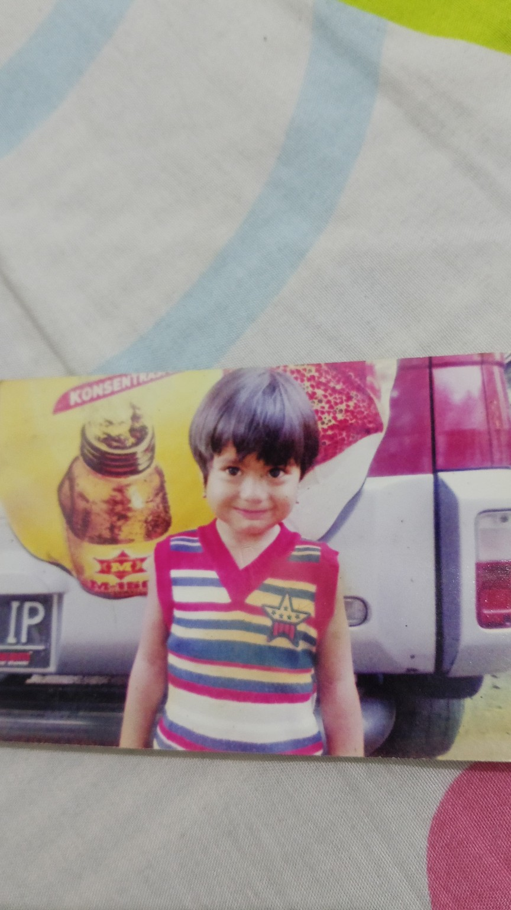
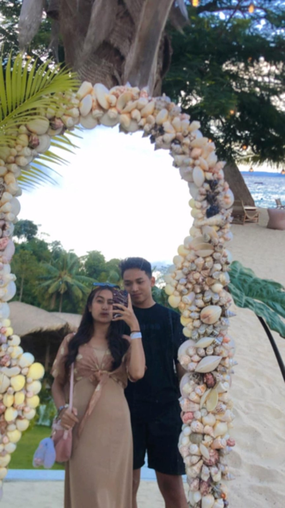
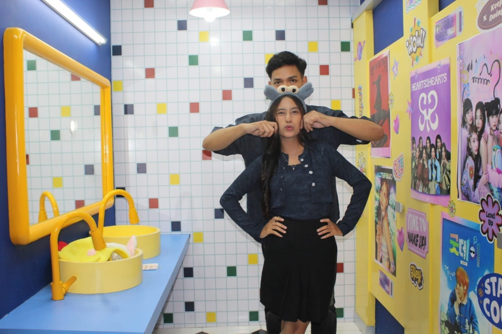
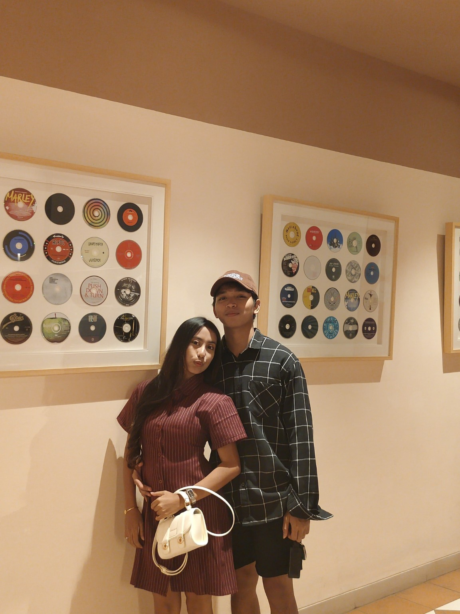
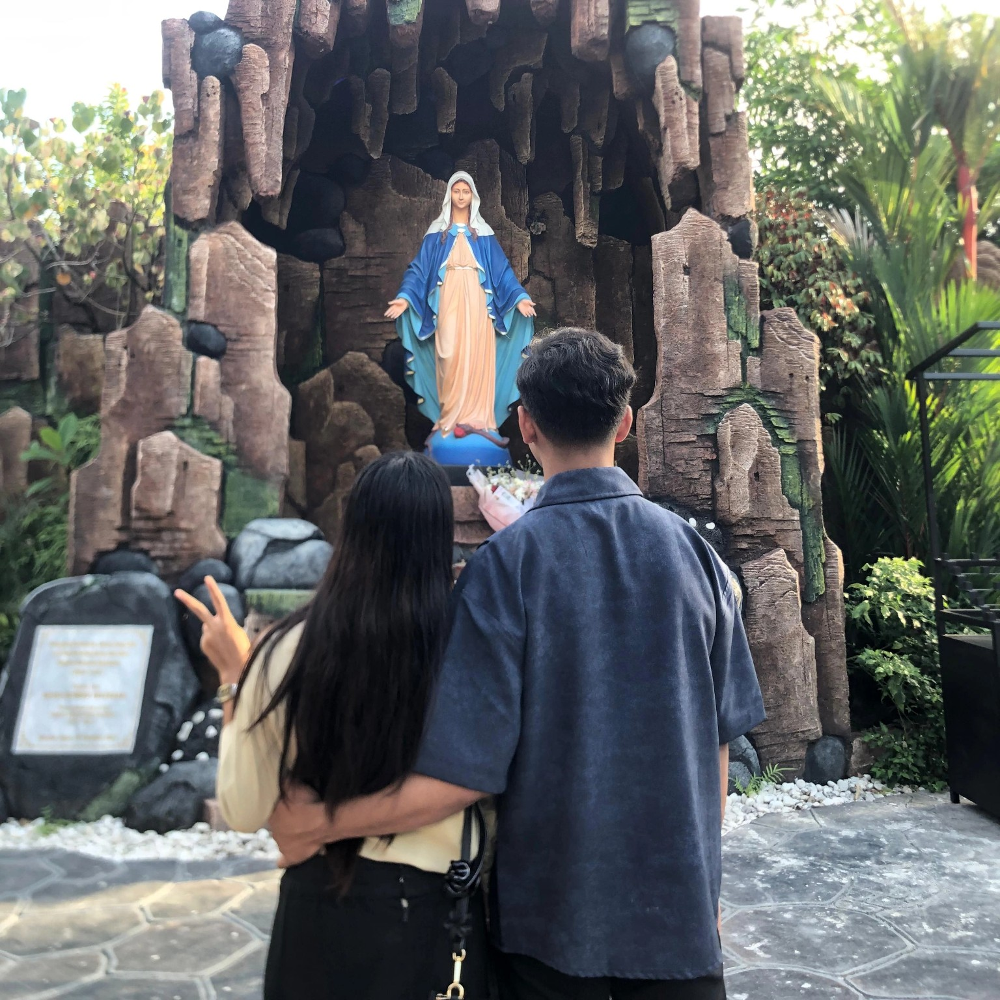

Mungkin kita tak tahu ke mana perjalanan ini akan membawa kita, tapi aku ingin setiap langkahnya kita jalani bersama. Semoga ini menjadi awal dari banyak cerita indah tentang kita.

Sebelum mengenal kamu, ada seorang anak kecil yang hanya tahu tentang dunia sederhananya—tersenyum, bermain, dan menjalani hari tanpa tahu bahwa suatu saat nanti akan bertemu seseorang yang begitu berarti.

Di suatu sore yang indah, ditemani suara ombak dan luasnya pantai, tanpa kita sadari di sinilah salah satu halaman pertama dari cerita cinta kita dimulai. Sederhana, tapi menjadi momen yang selalu ingin aku ingat, karena sejak hari itu ada kamu dan aku yang perlahan mulai menulis perjalanan kita bersama.

Perjalanan kita ternyata tidak selalu tentang tawa dan bahagia. Ada susah, sedih, marah, kecewa, dan berbagai lika-liku yang pernah kita lewati bersama. Tapi justru dari semua itu, cerita kita menjadi semakin berarti, karena kita belajar untuk saling memahami, memaafkan, dan tetap bertahan.

Setelah semua tawa, air mata, perdebatan, dan kebahagiaan yang kita bagi, aku sadar bahwa perjalanan ini bukan tentang menjadi sempurna. Ini tentang dua orang yang terus belajar untuk tumbuh dan berjalan bersama, meski jalannya tidak selalu mudah.

Semoga ke depannya kita bisa melewati lebih banyak hal dengan hati yang lebih kuat, menciptakan lebih banyak kenangan, dan tetap saling memilih dalam keadaan apa pun.
Kembali ke awal 🤍